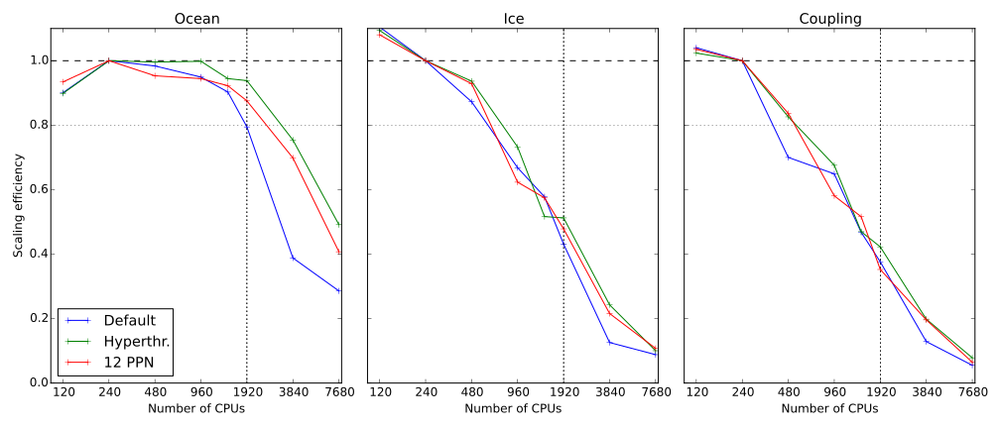
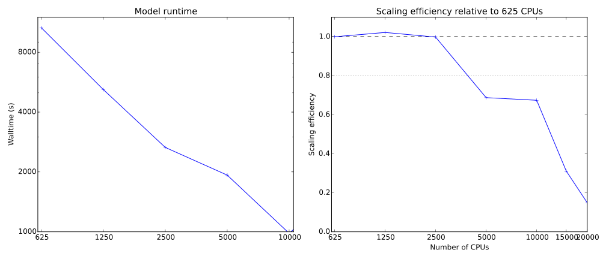
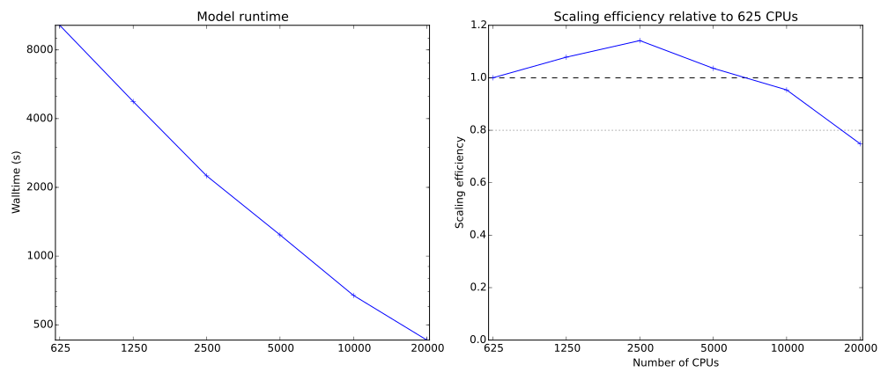

BoM/NCI Meeting Report
Marshall Ward
Completed Work (MOM)
- Scaling (ARCCSS)
- 0.25° global ocean-ice
- 0.1° global ocean-ice
- Code changes
- Improved coupler initialization
- Potential energy optimization
- Land cell check optimization
- Improved collective support in FMS framework
- Land masking: 20-25% reduction of CPU usage
0.25° Submodel Scaling

0.1° Performance (Init+Main)

0.1° Performance (Main)

Beneficiaries
- ARCCSS
- 30 years of 0.1° model spinup
- CSIRO
- ACCESS-CM 2 adoption of 0.25° model
- Bluelink (BoM, CSIRO)
- BRAN scaling to 720 CPUs
- CSIRO BGC (OFAM) scaling to 1300 CPUs
- 0.1° integration in Bluelink, ARCCSS
Future MOM work
- Investigate submodel scaling
- Codebase integration of OFAM, CSIRO BGC to MOM5
- MOM diagnostic improvement
- Reduce collectives during output
- Resolve streamfunction crashes at 10k
- Scaling beyond 10k (25600 CPU target)
Future Involvement
- Bluelink (CSIRO, BoM)
- BRAN (+ OceanMaps) profiling
- CSIRO BGC
- Code consolidation across projects
- ROMS (AAD)
- Ben Galton-Fenzi and Andreas Klocker (UTas)
- 6000 x 6000 x 31 grid points
- Largest ROMS simulation ever?
- MITgcm (ARCCSS)
- Max Nikurashin (UTas)
- Currently 1000 x 1000 x 150 (1.6km) on 300 CPUs
- Planning 0.2km (8000 x 8000 x 150?)